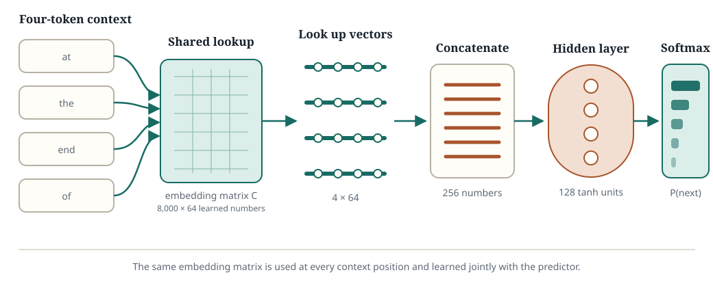

A tiny neural language model
What comes next?
Type a phrase and watch a small neural network distribute probability over its next token. It is not an LLM: it sees only the four most recent tokens and learned from roughly two million words of Wikipedia.
Your text
Loading the model…
The four tokens the model sees
Earlier tokens do not affect this prediction.
Possible next tokens
<unk> means “some word outside the model’s 8,000-token vocabulary.” The bars are scaled relative to the most likely token; the printed percentages are actual probabilities.
Under the hood
The Bengio model, twenty years later
In 2003, Yoshua Bengio, Réjean Ducharme, Pascal Vincent, and Christian Jauvin described a neural language model that learns two things together: a vector representation for every word and a function that predicts the next word from those vectors. Because similar words can acquire nearby vectors, an example can teach the model something about sentences it never saw verbatim.

The model looks up an embedding for each context token and joins the four vectors into one long vector. A hidden layer transforms that representation, and the output layer produces one score for every token in the vocabulary. Softmax turns those 8,000 scores into probabilities that sum to one. When prediction errors flow backward through this network, they also adjust the four selected rows of the embedding matrix—that is how the word vectors are learned.
Reference: Bengio, Ducharme, Vincent, and Jauvin, “A Neural Probabilistic Language Model”, Journal of Machine Learning Research 3 (2003), 1137–1155.